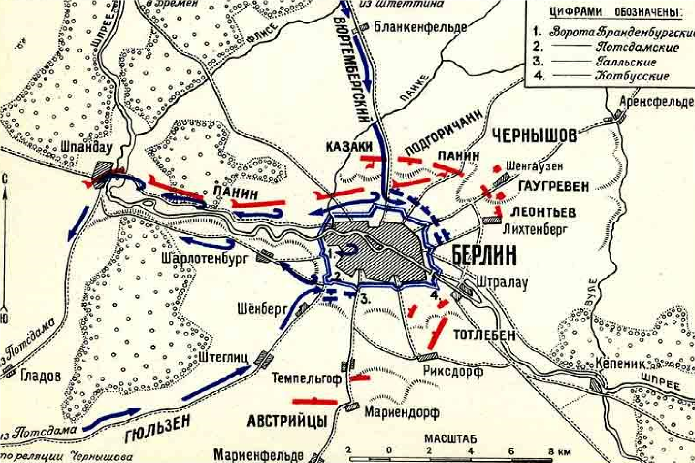
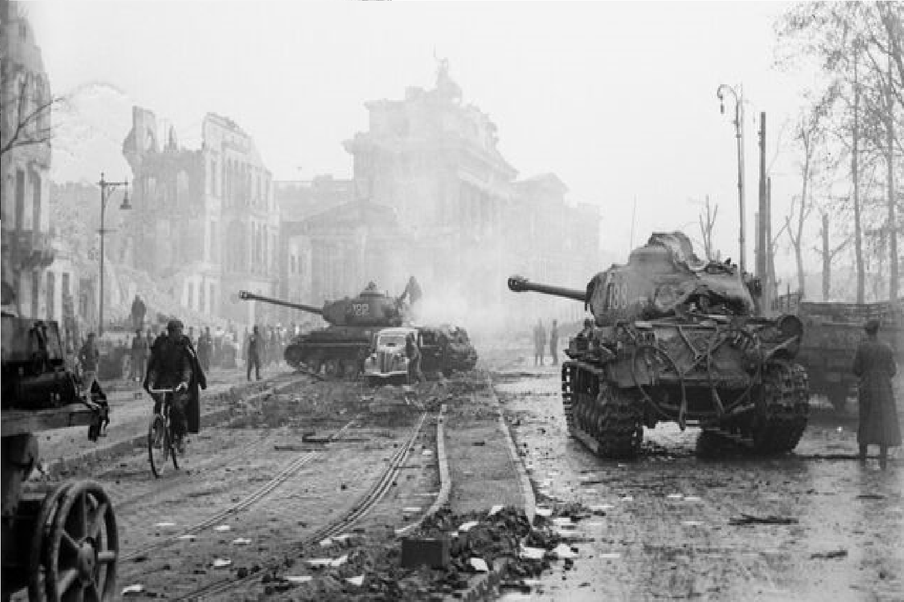
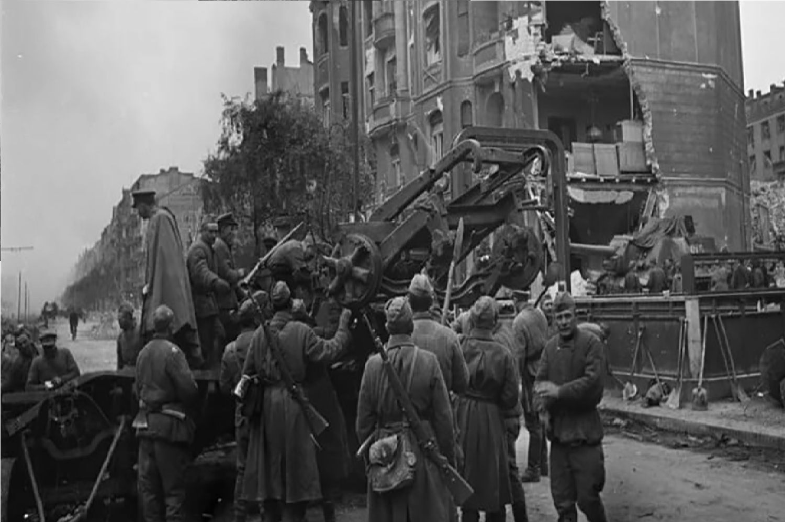

1945
|  |
ПодробннеС самого начала апреля 1945 года советские войска перешли в наступление, стремясь завершить разгром гитлеровских сил. Военную операцию разрабатывали с учётом опыта предыдущих крупных боёв, а также учитывая численное превосходство СССР в танках и артиллерии. Значительная часть германских военных сил была занята на других фронтах, и в окрестностях Берлина оставались лишь остатки войск. |
|
Советская операция началась 16 апреля 1945 года с массированного артиллерийского обстрела Берлина. В ходе битвы, продолжавшейся до 2 мая, советские войска осуществили несколько крупных атак на город, который был защищён немецкими солдатами и народным ополчением. Бои шли в условиях городских сражений, и значительная часть арсеналов и укреплений была использована в городской инфраструктуре.С каждым днём советским войскам удавалось оттеснять немецкие войска к центру города. 30 апреля 1945 года, в день, когда Адольф Гитлер покончил с собой в своём бункере, советские части вошли в центр Берлина. |
 |
|  | 2 мая 1945 года капитуляция Берлина была официально подписана, что стало одной из последних страниц Второй мировой войны в Европе. Штурм Берлина привёл к полной победе СССР над нацистской Германией и окончательному завершению войны в Европе. Этот момент стал символом победы советского народа и, в частности, сотрудников Красной Армии, заплативших высокую цену за освобождение Европы от нацизма.Штурм Берлина оставил глубокий след в истории, и тема взятия города продолжает оставаться предметом исследований и дискуссий. Итогом штурма стал раздел Германии и началo холодной войны, что оказало длительное влияние на политическую ситуацию в Европе. |